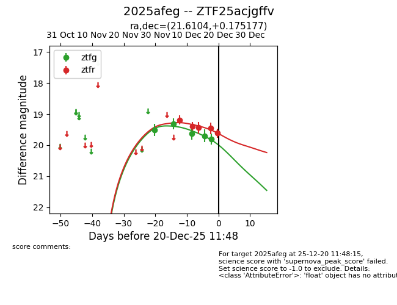
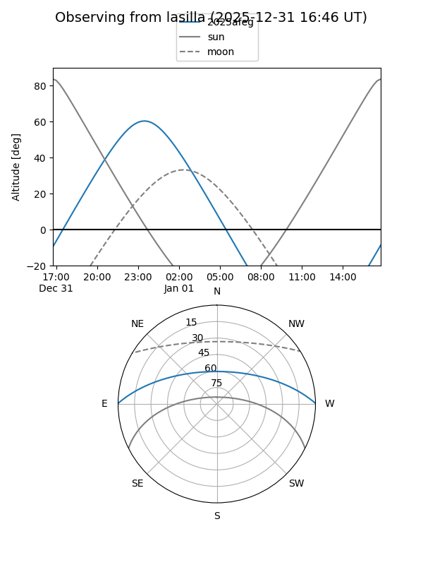
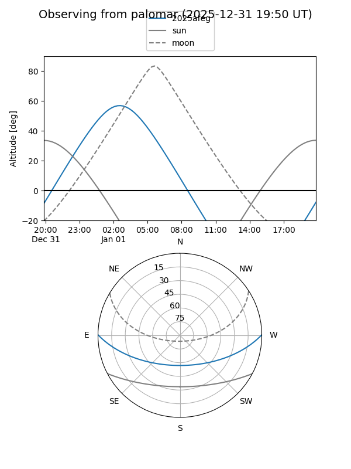
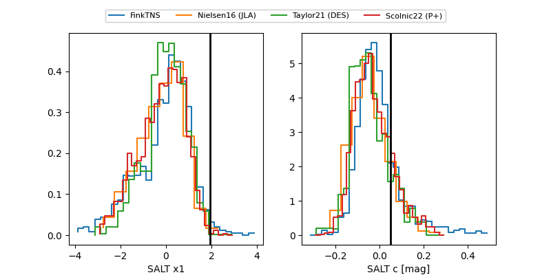

2025afeg
Target 2025afeg at 2025-12-31 17:00
Aliases and brokers:
FINK:
Lasair:
ALeRCE:
TNS:
YSE:
alt names
ZTF18adrywzv (ztf)
ZTF25acjgffv (fink_ztf)
2025afeg (tns,yse)
Coordinates:
equatorial (ra, dec) = 21.6104,+0.17518
equatorial (HMS+DMS) = 01:26:26.50,+00:10:30.64
galactic (l, b) = (141.4814,-61.42952)
Flags:
Photometry:
last ztfg=19.93, ztfr=19.45
6 ztfg, 4 ztfr detections
Lightcurve

Visibility


Additional plots
